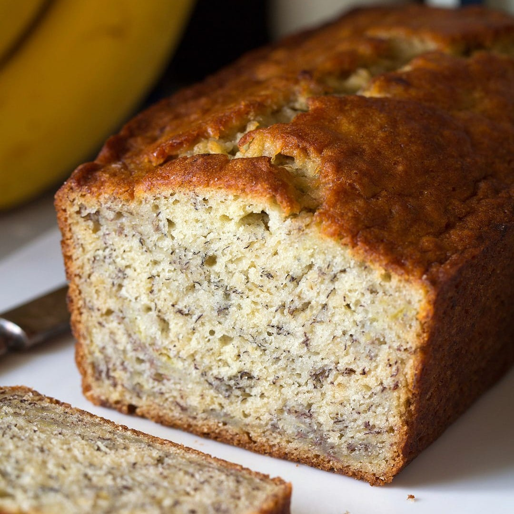

Banana Bread Cake

Description
Banana Bread Cake was one of the first things we baked that ended up being yummy.
It tasted yummy, and of bananas. It requires bananas but the variety of the nearly-wilted type is suited best.
However, it is also possible to chuck a few into an oven and heat for 3 minutes to emulate a similar texture. Throw in vanilla extract and cinnamon and it somehow makes the final product better. Best baked as a present in a pinch.
Ingredients
- All-Purpose Flour (215g or 1 3/4 cups)
- Baking Soda (6g or 1 Tsp)
- Salt (6g or 1 Tsp)
- Ground Cinnamon (3g or 1/2 Tsp)
- Brown Sugar (150g or 3/4 Cup)
- Unsalted Butter (113g or 1/2 Cup)
- Eggs (2)
- Very Ripe Bananas (430g)
- Vanilla Extract (5ml or 1 Tsp)
Steps
- In a bowl, throw in the flour, salt, ground cinnamon and baking soda.
- In another bowl, mix together the butter and brown sugar together before throwing in the eggs and vanilla extract then mix them together
- Harvest the bananas and mash them in a separate bowl or directly chuck them into the bowl with the butter or brown sugar. Mix everything thoroughly
- Combine both bowls together by adding the flour and other powders into the bowl with the butter, bananas and brown sugar. Mix and fold everything until they look good
- Pour the dough into a bread pan with parchment paper and chuck it into an oven. Cook for 50 minutes at 170 Celcius
- Serve~